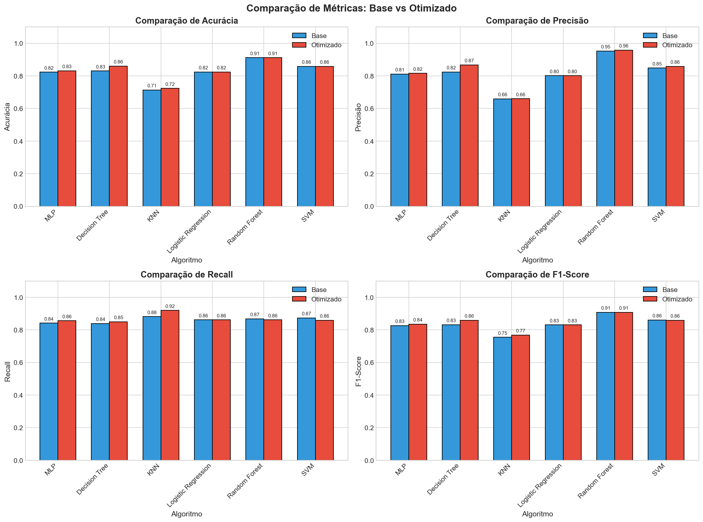

📊 Resumo Executivo
Acurácia Média (Base)
Acurácia Média (Otimizado)
F1-Score Médio (Base)
F1-Score Médio (Otimizado)
📈 Resultados - Modelos BASE
| Algoritmo | Acurácia | Precisão | Recall | F1-Score | AUC-ROC | Tempo (s) |
|---|---|---|---|---|---|---|
| MLP | 0.8230 | 0.8111 | 0.8415 | 0.8260 | 0.9118 | 4.4609 |
| Decision Tree | 0.8302 | 0.8244 | 0.8386 | 0.8314 | 0.8302 | 0.0350 |
| KNN | 0.7137 | 0.6595 | 0.8818 | 0.7546 | 0.8404 | 0.0013 |
| Logistic Regression | 0.8245 | 0.8016 | 0.8617 | 0.8306 | 0.9087 | 0.0054 |
| Random Forest | 0.9122 | 0.9525 | 0.8674 | 0.9080 | 0.9605 | 0.6024 |
| SVM | 0.8590 | 0.8487 | 0.8732 | 0.8608 | 0.9362 | 0.8544 |
🚀 Resultados - Modelos OTIMIZADOS
| Algoritmo | Acurácia | Precisão | Recall | F1-Score | AUC-ROC | Tempo (s) |
|---|---|---|---|---|---|---|
| MLP | 0.8317 | 0.8159 | 0.8559 | 0.8354 | 0.9063 | 1.3460 |
| Decision Tree | 0.8604 | 0.8676 | 0.8501 | 0.8588 | 0.8877 | 0.0319 |
| KNN | 0.7237 | 0.6605 | 0.9193 | 0.7687 | 0.8719 | 0.0007 |
| Logistic Regression | 0.8245 | 0.8016 | 0.8617 | 0.8306 | 0.9087 | 0.0049 |
| Random Forest | 0.9122 | 0.9583 | 0.8617 | 0.9074 | 0.9578 | 1.1377 |
| SVM | 0.8590 | 0.8588 | 0.8588 | 0.8588 | 0.9300 | 1.5148 |
📊 Análise de Melhorias (Base → Otimizado)
| Algoritmo | Melhoria Acurácia | Melhoria F1-Score | Variação Tempo |
|---|---|---|---|
| MLP | +1.05% | +1.14% | -69.83% |
| Decision Tree | +3.64% | +3.29% | -8.87% |
| KNN | +1.41% | +1.86% | -47.24% |
| Logistic Regression | +0.00% | +0.00% | -9.35% |
| Random Forest | +0.00% | -0.06% | +88.86% |
| SVM | +0.00% | -0.23% | +77.30% |
📊 Visualizações

Comparação de Métricas

Ranking Final

Curvas ROC

Heatmap de Melhoria

Tempo de Treinamento

Gráfico Radar

Scatter Plot

Box Plot de Métricas

Sumário de Desempenho

Matrizes Confusão (Base)

Matrizes Confusão (Otimizado)
💡 Conclusões e Recomendações
Algoritmo mais recomendado: Random Forest apresentou o melhor desempenho geral, com uma acurácia de 91.22% e F1-Score de 90.80% no modelo base.
Equilibrio entre desempenho e velocidade: Decision Tree oferece um bom equilíbrio, com acurácia de 83.02% e tempo de treinamento muito reduzido (0.035s).
Para aplicações em tempo real: KNN é extremamente rápido (0.0013s), mas com menor acurácia (71.37%). Pode ser útil em cenários com restrições de latência.
Recomendações Finais:
- Produção: Use Random Forest com 200 estimadores para melhor acurácia
- Interpretabilidade: Use Decision Tree com profundidade máxima de 10
- Velocidade crítica: Use KNN com k=7 e weights='distance'
- Trade-off: Use SVM com kernel RBF para bom desempenho geral
🔬 Metodologia
Dataset: Alzheimer's Disease Detection (2.149 amostras, 33 features)
Divisão de dados: 75% treino, 25% teste (estratificado) - ANTES do balanceamento
Balanceamento: SMOTE aplicado APÓS o split e APENAS no conjunto de treino
Normalização: StandardScaler
Validação: 5-fold Stratified Cross-Validation
Métricas: Acurácia, Precisão, Recall, F1-Score, AUC-ROC
Pipeline Correto de Processamento:
- Divisão Train/Test: 75% treino, 25% teste (estratificado)
- SMOTE (apenas no treino): Balanceamento para equilibrar classes
- StandardScaler: Normalização dos dados
- Treinamento: Modelos treinados com dados balanceados
- Validação: 5-fold Stratified Cross-Validation no treino
⚠️ Nota Importante: SMOTE é aplicado APÓS o train/test split e APENAS no conjunto de treino. Isso garante que o conjunto de teste permaneça com dados reais, sem amostras sintéticas poluindo a avaliação.
Algoritmos Comparados:
- MLP (Multi-Layer Perceptron) - Rede Neural
- Decision Tree - Árvore de Decisão
- KNN - K-Nearest Neighbors
- Logistic Regression - Regressão Logística
- Random Forest - Floresta Aleatória
- SVM - Support Vector Machine